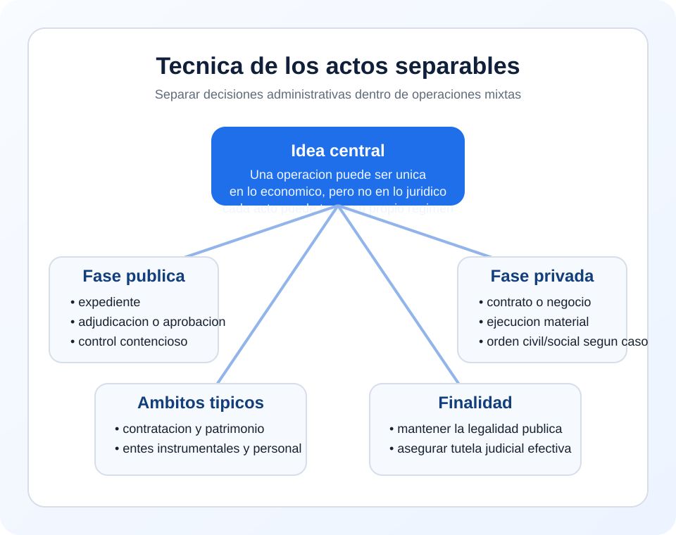

Contratacion
Adjudicacion, exclusion y acuerdos previos frente al contrato posterior.
Tema 1 · Punto 2.5 · Resumen
Esta tecnica permite aislar, dentro de una operacion mixta, las decisiones administrativas que mantienen su regimen de Derecho publico, aunque el resultado final tenga elementos privados.
Idea-clave de examen: una operacion puede ser unica en lo economico, pero no en lo juridico.

Hay acto separable cuando una decision administrativa puede individualizarse dentro de una operacion mas amplia y, por ello, conserva su propio regimen de Derecho publico.
| Fase | Contenido habitual |
|---|---|
| Publica | Expediente, aprobacion, seleccion, adjudicacion, autorizacion |
| Privada o mixta | Contrato, negocio patrimonial, ejecucion material o relacion laboral |
La fase o decision administrativa separable corresponde al orden contencioso-administrativo. El contenido privado o laboral de la relacion puede corresponder al orden civil o social.
Clave practica: una misma operacion puede generar litigios distintos en ordenes jurisdiccionales distintos.
Adjudicacion, exclusion y acuerdos previos frente al contrato posterior.
Acuerdos de enajenacion o aprobacion del expediente frente al negocio patrimonial.
Decisiones de tutela o control insertas en entornos con tecnicas privadas.
Convocatoria y seleccion publicas junto a un vinculo final laboral.
Formula util para examen: la tecnica de los actos separables aisla las decisiones administrativas insertas en operaciones mixtas para someterlas a su regimen publico propio y al control contencioso-administrativo.